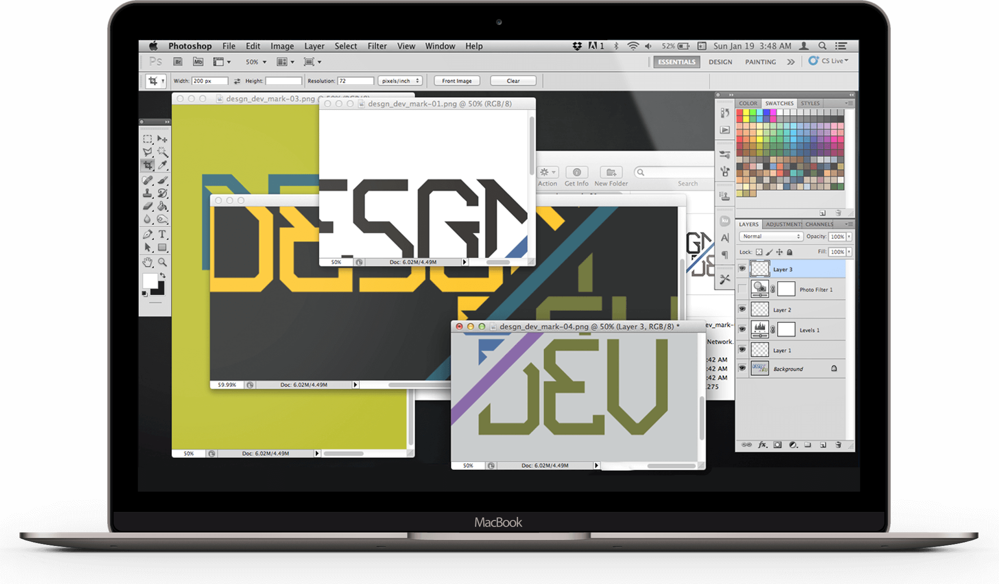

I'm a website guy
My name is Chris Jefferies, and I am a multidisciplinary designer with a specialty in web environments.
I come from a design background and bring a highly technical grasp of frond-end development and computer programming to the table.

Designed & Coded
Soon after starting at tmp, I was tasked with a fully realizing the company's visual identity. With a complete revamp of the website, and a fresh set of presentation assets, we landed our biggest client yet: MillerCoors.
Usability Engineering
Originally a project for ShopUSAHockey.com, Newt quickly became my go-to nav experience for multiple moblie-up projects (including the nav experience on this site).
Care to read a quick summary of the usability research that went into this project and the decisions made along the way?
source code
// Aw, she turned me into a
//
// ********** NEWT ***********
//
// include(jquery.2.1.4.min.js);
// Specify screen size where Newt activates. Hide desktop nav in css
var breakPoint = 768;
// ## Error handling.
// Reset to default state on screen flip. Prevents wonky layout on iOS.
$(window).resize(function() {
var w = $(window).width()
if (w < breakPoint) {
$('.newt-logo-area img').css('margin-left', ((w - $('.newt-logo-area img').width()) / 2) );
if ( $('.newt-search input').is(':visible') ) {
$('.newt-search').css('width', (w - 50) );
}
}
});
// ## Primary function
// Respond to user interaction and toggle menu on/off
$('.newt-menu, .newt-mask').click(function() {
// Query State, set variables accordingly
var x = $('.newt-menu').is(':visible'), w = $(window).width(), y;
x? y=0: y=500;
$('.newt-menu').delay(y).fadeToggle(200);
if (w < breakPoint) {
$('.newt-mask, nav').animate({ width: 'toggle' }, 500);
} else {
$('nav').animate({ width: 'toggle' }, 500);
$('.newt-mask').fadeToggle(500);
}
$('nav ul li p, nav .cart-link p').delay(300 - y).fadeToggle(200);
});
// ## Secondary function
// Replace logo/header area with search
$('.newt-search').click(function() {
var w = $(window).width();
if ( !($('.newt-search input').is(':visible')) && w < breakPoint ) {
$('.newt-logo-area img').fadeOut(100);
$('.newt-search .newt-mag').delay(150).fadeOut(300);
$('.newt-search').animate({ width: (w - 50) }, 400, function() {
$('.newt-search input').css('opacity', 0).delay(100).animate({width: 'toggle', opacity: 1}, 400, function() {
$(this).focus();
});
});
}
});
// ## Secondary function
// Return logo/header/search to default state if abandoned.
$(window).scroll(function() {
var w = $(window).width();
if ( $('.newt-search input').is(':visible') && !($('.newt-search input').is(':focus')) && w < breakPoint ) {
$('.newt-search input').hide();
$('.newt-search').animate({ width: 50 }, 400);
$('.newt-search .newt-mag').delay(400).fadeIn(200);
$('.newt-logo-area img').delay(500).fadeIn(200);
}
});
text-overflow: scrollwrap
Designing Newt
Over the course of 2014-15, shopUSAHockey.com's traffic became increasing mobile. For our team, it passed the point where compromising on mobile UX to provide a more perfectly cohesive experience from a branding perspective remained realistic.
While originally just a proof of concept, I eventually modified to code to plug 'n' play in multiple environments. While Hockey's mobile nav experience preserved the functionality and interaction, the actual engine was rebuilt to accomodate a more robust library that could handle additional end-uses like the shopping cart.
Engineering Newt
You'll notice that some variables, like w, are only defined locally. While repeated across the 4 functions that define Newt's primary behavior, each time functionality is requested by the user, newt returns behavior tailored to that environment (without assuming, for instance, that the screen is the same orientation as it was on page load).
One alternative might have been to query and update a global w whenever the screen is resized, but would have forced the browser to execute that update even when behavior from newt wasn't requested. In a use case where a user quickly bounces between portrait (to scroll and browse) and landscape (to read and admire images), this would have meant unnecessary calculations. Conversely, a more ideal user that keeps orientation lock set will never need to execute the .resize() codeblock for error handling.
Taking the lead on tmp's flagship brand
For more than a year, I've been the lead developer for the American Heart Association's ShopHeart.org. This meant spearheading some big projects, including a complete nav UX rebuild, and a new generation of content pages.
Rebuilding the Nav experience meant managing everything from overseeing the product categorization and migration to the principle development and environment compatability testing.
While I'm proud of the engineering, the web layout and design ended up being some of my strongest work as a designer, pushing the limits of my photo-retouching, typography and marketing skills.
Photoshop like a Pro
Utlizing the robust software's full capability to create powerful imagery that communicates and connects.
This project, for the USA Hockey Olympic Team, formed the central design element in multi-channel series push leading into the busy holiday season.
A multiple touchpoint print and digital campaign leading into The Hockey Shop's holiday 2016.
Conceptually, the campaign hinged on the idea of brand loyalty. Rather than posing a rational proposition—here is a discount, for example—the campaign presupposed a strong brand affinity among a targeted audience, and leveraged the emotional connection built among coaches, players and fans all over the country.
Why do it this way?
Well, social identity theory is a well-documented area of psychological study, and any marketer worth his salt wouldn't dismiss an opportunity to let human brains generate their own demand for your product.
While my budget proposal for setting up a model shoot for this concept wasn't approved, retrofitting the apparel onto a professional, high-quality stock photo was a quick proposition.
Here's how I did it:


Since it the central push for the campaign was a centerfold in USA Hockey Magazine, quality and attention to detail was paramount.
This technique is a popular choice for delivering a high quality project on a quick timeline, and while it doesn't provide the kind of consistency and specialization derived from a dedicated model shoot, it's highly budget friendly, and is often a 99% compromise. You might recognize @MaridavProd's Jogging Guy from above, but that's another write-up.